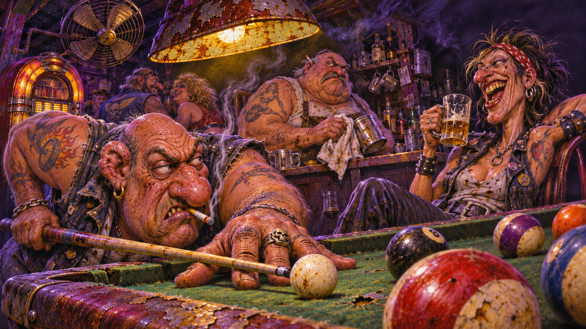
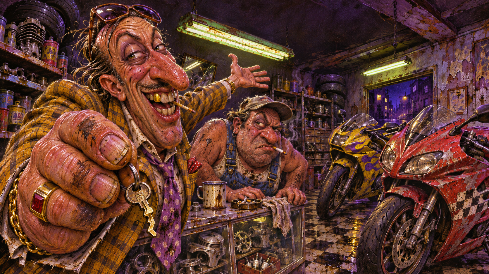
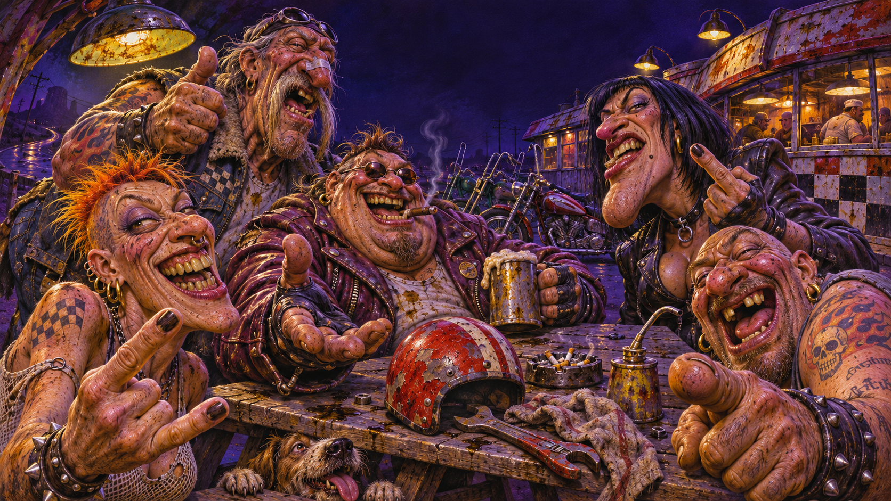
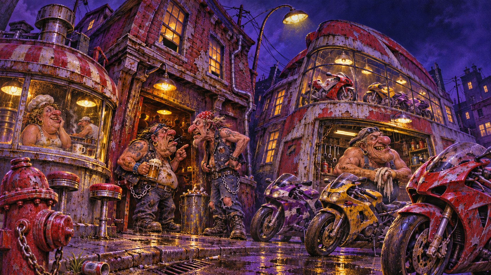

1. Biker bar

Reference: UI-IMG-0072 · 1672 × 941 · PNG · Exact generation prompt
Shared style approved by the user. Four new original scene drafts inspired by the original game screens. Individual composition review and native UI integration remain pending. Images have no baked-in menu controls.

Reference: UI-IMG-0072 · 1672 × 941 · PNG · Exact generation prompt

Reference: UI-IMG-0071 · 1672 × 941 · PNG · Exact generation prompt

Reference: UI-IMG-0142 · 1672 × 941 · PNG · Exact generation prompt

Reference: UI-IMG-0146 · 1672 × 941 · PNG · Exact generation prompt